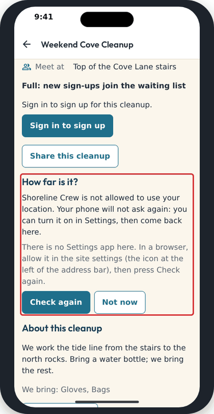

React Native & Expo · Part 2 · Session 14 of 26 · 3 hours
Session 14
Offline First and Permissions
A log that survives no signal, and a phone that is asked politely.
Today
Three hours, two lessons
| 0:00 | Warm-up: where does it live? |
| 0:10 | 5.5 Offline First: model, demo, lab, project |
| 1:25 | Break (10 min) |
| 1:35 | 6.1 Permissions Done Right: model, demo, lab, project |
| 2:50 | Exit ticket, homework, what to bring next time |
LABS Lab files are in
labs/module-14. Work in starter/, never the solution.Warm-up · 10 minutes
Where does it live?
- The session token · the theme choice · the logbook · a log sent offline
- Lesson 5.4: airplane mode, force-quit. What happened to the log?
- The clientId: when, where, what for?
WHY memory · AsyncStorage · SecureStore · SQLite: one of them is not like the others.
5.5
Offline First
Save on the phone first; send when you can.
5.5 · Mental model
The logbook in a dry bag
- The counts go into a logbook in a dry bag, not a phone call
- Rain (no signal) and a capsized kayak (the app closing) do not matter
- At the office: copy each page, tick it off, ask again if unconfirmed
- The clientId is the page number: no page filed twice
5.5 · Two rules
What makes the queue safe
- Save the log before anything is sent
- Leave the queue only after the server and the logbook have it
- Queue what a person creates (a log, a note, a photo)
- Let what the server decides (a sign-up) wait for the server
WATCH Lesson 5.4's paused mutation waits in memory: gone when the app is.
5.5 · Live demo
persist with no storage, on a phone
globalThis.window = {}; // a window without localStorage, as on a phone
const useLogQueue = create()(
persist((set) => ({ logs: [], add: (log) => set(/* ... */) }), {
name: 'shoreline-crew-log-queue', // no storage option
}),
);
useLogQueue.getState().add({ clientId: 'c3a0f6b2' });
add threw: TypeError: Cannot read properties of undefined (reading 'setItem')
WATCH tsc says nothing; the web preview has localStorage. A phone does not.
5.5 · The finished code
Three phone differences
shoreline-crew/src/state/logQueue.ts
name: 'shoreline-crew-log-queue', // A phone has no localStorage: tell persist where to keep the queue storage: createJSONStorage(() => AsyncStorage), // Save the logs only. "Sending right now" ends when the app closes partialize: ({ logs }) => ({ logs }),
WHY And
skipHydration: true: loadLogQueue() runs behind the splash, with the session and the settings.5.5 · Predict
One log, sent four ways
- Theo, who has a spot: first try
- Theo again, same clientId: the answer was lost
- Amara, with no spot at this cleanup
- No sign-in at all
PREDICT Write four status codes, and what the queue should do with each.
5.5 · Live demo
What shoreline-api answered
node answers.mjs
Theo, first try: 201 Theo, same clientId again: 200, same log: true Amara: 403 Only volunteers with a spot at this cleanup can log for it. No sign-in: 401 Sign in first. Theo's logs with this clientId on the server: 1
WHY 200 and the same log: the clientId made the resend harmless.
5.5 · Safe retries
Every answer means something
| 201 · 200 | Done: into the logbook, then out of the queue |
| 403 · 404 · 409 | Refused: keep the server's words, never resend by itself |
| 401 | Keep everything, "sign-in ended", stop |
| no answer · 5xx | Keep waiting, count the try, stop for now |
ASK Would asking again, unchanged, ever get a different answer?
5.5 · The sender
The catch block sorts
shoreline-crew/src/state/sendLogs.ts
} catch (error) { if (error instanceof ApiError && error.status === 401) { markSignInEnded(); // the sign-in has ended: keep everything for the next one break; } if (error instanceof ApiError && error.status < 500) { // A "no" (403 no spot, 409 not yet, 400 a field): sending again gets the same answer useLogQueue.getState().change(clientId, { status: 'refused', problem: error.message }); } else { // No answer, or server trouble: keep it, count the try, and stop until the next chance useLogQueue.getState().change(clientId, { attempts: item.attempts + 1 });
5.5 · When to send
Five moments, one harmless function
- Send pressed (the form) · Send now (the Logbook)
- The app starts, or someone signs in (the session changes)
- Back online:
onlineManager(NetInfo on a phone) - Back in the foreground:
focusManager(AppState)
WATCH Not while the app is closed: the system decides when background tasks run.
5.5 · A shared phone
Whose log is it?
- Every queued log carries its volunteerId
- Only that volunteer's sign-in sends it, checked before each request
- The Logbook and the badge show only your own
- Sign-out keeps the queue: it goes out when Theo signs in again
WATCH The server takes the volunteer from the token, not from the log.
5.5 · Guided lab · 25 minutes
An outbox of hazard reports
labs/module-14/l5_5-offline-first/starternpm test: eight failures. Where did you see that message today?- Task 1: name the storage, save the reports only
- Task 2: sort the answers (MSW plays the server)
MORE Task 3 at home:
useShallow (Maximum update depth exceeded).5.5 · Guided lab
As shipped, and after Task 1
TypeError: Cannot read properties of undefined (reading 'setItem') FAIL src/lab.test.tsx ✓ Task 1: an added report is saved in AsyncStorage, the reports only ✓ Task 1: a saved queue is read back at startup, without anything in an old shape ✓ Task 2: 201 and 200 both mean done: the reports leave the queue ✕ Task 2: a 403 is refused with the server's words, and the next report still goes ✕ Task 2: a 401 keeps everything, ends the sign-in and stops ✓ Task 2: no answer, or a 503: the report waits, the try is counted, the run stops ✓ Task 2: offline, or another volunteer's report: nothing is sent ✕ Task 3: the Not sent yet list shows only the viewer's reports, and Remove works Tests: 3 failed, 5 passed, 8 total
LAB Every test uses the store: Task 1 first.
5.5 · Project
Saved on this phone

5.5 · Project
Not sent yet, with a count on the tab

PHONE Step 9 on a phone follows the documentation: the course could not run one.
10
Break
Back at 1:35: the phone itself, starting at its doors.
6.1
Permissions Done Right
At the right moment, with a reason, ready for a no.
6.1 · Mental model
The farm gate on the way to the beach
- Knock at the gate, not at every farmhouse when the van leaves
- Say in one sentence why
- A no: take the long way round, without arguing
- Padlocked: call the office that holds the key (Settings)
6.1 · The life of a permission
Three platforms, the same states
| iPhone | Asks once: one "Don't Allow" and it is blocked |
| Android | May ask once more; blocked after the second no |
| Web preview | Blocked after Never allow (canAskAgain still says true) |
| All | Allow Once and approximate count as granted; Settings changes it |
PHONE From Apple's, Google's and Expo's docs: your phone has the last word.
6.1 · Five rules
Knock well
- Ask in context: the press that needs it
- Explain first: Continue (not Allow) and Not now
- A no is an answer: everything else keeps working
- When only Settings can help, say so
- Check before every use
6.1 · Expo's answer as a step
permissionStep
shoreline-crew/src/hooks/usePermission.ts
if (response.status === 'undetermined') { return 'not-asked'; } // The web preview's answers always say canAskAgain: true, but a browser never asks again after // a "Block": treat a no there as blocked if (!response.canAskAgain || Platform.OS === 'web') { return 'blocked'; } return 'denied';
WHY
get… reads · request… asks if it still may · the Hook reads on mount6.1 · The gate
Explain before the phone asks

6.1 · Live demo
Forget the parentheses
npx tsc --noEmit
src/components/DistancePanel.tsx:43:34 - error TS2345: Argument of type '(options?) => [...]' is not assignable to parameter of type 'PermissionHookResult'.
...
Did you mean to call this expression?
WATCH Read it from the bottom. usePermission takes what the Hook returns.
6.1 · Back from Settings
The Hook never reads again: you do
shoreline-crew/src/hooks/usePermission.ts
export function usePermission([response, ask, check]: PermissionHookResult): Permission { useEffect( () => // The focus manager from Lesson 5.2: AppState on a phone, the browser tab on the web focusManager.subscribe((focused) => { if (focused) { void check(); } }), [check], ); return { step: permissionStep(response), ask, check };
6.1 · The words on the question
A config plugin with your sentence
shoreline-crew/app.json
"expo-location",
{
"locationWhenInUsePermission": "Shoreline Crew uses your location to show how far you are from a cleanup's meeting point.",
"locationAlwaysAndWhenInUsePermission": false,
"locationAlwaysPermission": false,
"motionUsagePermission": false,
"locationFullAccuracyPermission": false
WHY false removes what Shoreline Crew does not use: Always, motion, precise on request.
6.1 · Live demo
Without the entry: the plugin runs anyway
npx expo config --type introspect
NSLocationAlwaysAndWhenInUseUsageDescription: 'Allow $(PRODUCT_NAME) to access your location', NSLocationAlwaysUsageDescription: 'Allow $(PRODUCT_NAME) to access your location', NSLocationWhenInUseUsageDescription: 'Allow $(PRODUCT_NAME) to access your location', NSMotionUsageDescription: 'Allow $(PRODUCT_NAME) to detect your current motion activity', …
WHY Auto-applied with default words: why expo install added no entry.
6.1 · Where you see what
Expo Go, your build, the browser
| Expo Go | Asks as Expo Go, its own words; answers shared by projects |
| Your build | Asks as Shoreline Crew, your words (Module 9) |
| Web preview | Asks as the browser, per address |
WHY Expo Go is excellent for the flow and blind to the words.
6.1 · Guided lab · 25 minutes
Voice notes, asked politely
labs/module-14/l6_1-permissions-done-right/starternpm testandnpm run typecheck: TS2345 again- Task 1: six answers, six steps (the web rule)
- Task 2: no asking on mount · Continue · Open Settings fallback
MORE Task 3 at home: call the Hook, re-read on focus.
6.1 · Project
Blocked, and the web's fallback

Wrap-up · 4 minutes
Exit ticket
- The two rules that make the queue safe
- A queued log comes back 403: what now, and why not retry?
- Why Continue, and what after an iPhone's first Don't Allow?
WHY No notes. Workbook Exit Ticket box or a sticky note on the way out.
Before Session 15
Homework and bring list
- Finish both projects; exercises; both quizzes; both journals
- Labs: Task 3 of each
- Two photos from your phone's camera: note the file sizes
- Bring: the finished 6.1 code, your phone, this workbook
NEXT Session 15: Camera, Photos, Location and Maps.